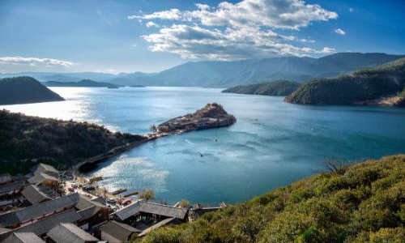
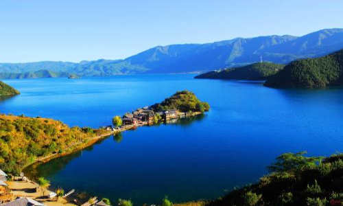
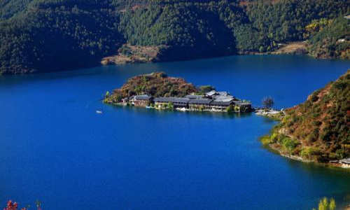

morly旅游圈
湖边的居民主要为摩梭人，也有部分纳西族人，摩梭人至今仍然保留着母系氏族婚姻制度。 最为繁华的大洛水村，有摩梭民俗博物馆，在这里你可以迅速恶补一下摩梭文化和民俗。 独特的“阿夏”婚姻、自然而原始的民俗风情、美丽的自然风光，为这片古老的土地染上了神秘而美丽的色彩，被称为“神奇的东方女儿国”。 黑瓦吾岛、里务比岛和里格岛，是湖中最具观赏和游览价值的三个景点，被称为“泸沽三岛”，租电瓶车环湖是游玩的最热门方式。
泸沽湖住宿选择:里格 里格岛是泸沽湖海湾内一个美丽的半岛，海岛三面环水，左右青山环抱，傍立格姆女神山。 ·这里有碧波如镜的湖面，高空的白云和四周的山峰清晰地倒影水中，把湖山天影融为晶莹的一体。 ·居住在这里的十几户摩梭姑娘们不仅聪明能干，而且能歌善舞、善良美丽，有“水中女儿国”的美誉。 里格是泸沽湖的一个村落。这里开发稍晚，保留了原生态。从里格村口开始，原本第一家客栈叫“里格NO.1”,现在又新开了家摩梭往事，直到里格码头，可以算作里格住宿的第一段。这一排的客栈，大家注意看客栈离湖的距离来判断是否有湖景房。距离湖远的，就是没有湖景房的。视野也会有影响，很多房间是看不到日出日落的。总之，经济实惠是这些客栈的共同点。 再往里走，到了里格湾，这里算做里格住宿的第二段。这里的客栈均价普遍比里格村口的贵，客栈数量不多，特点是，这一段的客栈，就位于里格观景台的下面，客栈房间面向泸沽湖，没有遮挡物，视野开阔。 然后第三段是著名的里格半岛，客栈价格比里格湾的更贵点。这一段客栈的特点是临水而建，真正的“湖面上的小屋”，浪漫第一。旺季时，推窗下就是湖水的房一价难求。
大落水: 大落水村又称大洛水，是泸沽湖周围最早开发的村庄，分为上落水和下落水两部分。 整个村庄都是摩梭人的木楞房，不用一颗钉子，也不用砖瓦，不仅冬暖夏凉，还特别防震。 村中的服务设施比较完善，店铺齐全，还有很多卖特色纪念品的小店，是很多游客到泸沽湖首选的落脚地。 靠近湖边的地方有很多猪槽船，游客可以付费乘船游湖，还可以到湖上的两个小岛去。 每到晚上，当地的摩梭人会穿起传统服饰，表演歌舞，十分热闹，还可以到湖边支起的帐篷里烧烤。 大落水村是泸沽湖的一个村落，开发较早，是泸沽湖交通的中心。从云南地界进入泸沽湖的话，都要首先抵达大落水。大落水的客栈数量比里格的多，设施也更齐全。大落水的客栈是沿着湖岸线建的，所以几乎每家都有正宗的湖景阳台房。如果不是一定要住水上屋的话，大落水绝对是更舒适的度假体验，空调热水一应俱全。
泸沽湖必玩体验:自行车环湖/乘车环湖 环湖是亲近泸沽湖的最好方式，也是来泸沽湖必玩的一个仪式。体力好、时间多，想看不止是被命名的景点的朋友，就可以选择自行车环湖。因为沿途美景无数，不止是景点，更是风光。 环湖线路：自行车环湖的路线和乘坐汽车环湖的路线是一致的。都是进入景区后，从大落水出发，可以顺时针，也可以逆时针开始骑行环湖。汽车环湖，推荐逆时针，即先上坡再下坡，这样视野开阔，是从最高点开始环湖欣赏泸沽湖。自行车环湖，推荐顺时针，下坡路多，能节省体力。整个环湖的路线约50公里，坐车的话是40分钟到1小时，沿途会在几个点停车给大家拍照。如果是自行车环湖，根据大家不同的情况，3-4小时或以上。
交通: 客车： 1.在丽江客运站乘坐大巴客车，先到宁蒗县城，到县城后乘坐小面包车(约30元/人)可前往泸沽湖。 2.在丽江客运站乘坐到永宁的大巴在大落水村下即可，票价50元。 3.丽江古城口玉河广场停车场每天早上有发往泸沽湖的旅游专线车，可抵达大洛水村和里格岛，往返车费160元/人，单程100元/人，早上8:00发车，车程3小时左右。 4.丽江高快客运站每天有两班车发往泸沽湖大洛水村，分别是8:00和8:30，车程3小时左右，车费约100元/人 5.丽江客运站每天有两班车发往泸沽湖大洛水村，分别是8:30和9:00，车程3小时，车费约106元/人 租车： 从丽江市区到泸沽湖可以自己租车，一般淡季为350-550元，旺季为550-800元
门票: 普通票:100人民币 (1月1日-12月31日 周一-周日) 半票:学生、60-69岁老年人、残疾人。(需持证) 免票:现役军人、军残、70岁以上老年人、国家新闻总署记者。(需持证) tips: 在云南和四川两个公路入口分别设有售票处。
开放时间: 08:00-18:00 (1月1日-12月31日 周一-周日)
内容整理至网络，如有侵权，请联系我们！1255394075@qq.com
  